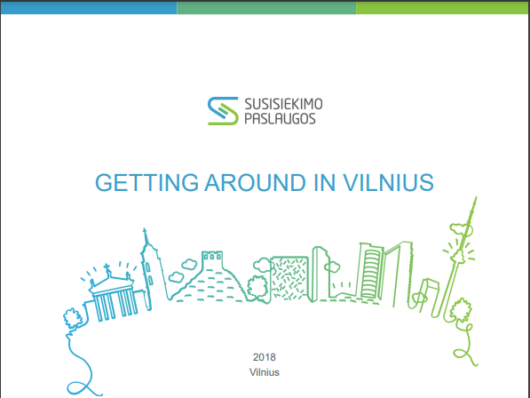

VILNIUS
Situated on the River Neris Vilnius (with the population of 543.000) is the heart of the country, the centre of science, economy, culture and politics, and the capital of finance.
The great intensity of social life in Vilnius is due to the location of the country's administrative institutions, foreign embassies and diplomatic offices. Vilnius can offer you a great variety of theatres, orchestras and festivals, rich libraries, different cuisines, lots of clubs.
In Vilnius you will find a wonderful Old town, which belongs to the UNESCO protected World Heritage and is one of the largest in Eastern Europe with the fine examples of Gothic, Baroque, Renaissance and classical buildings as well as its medieval layout and natural setting. Modern glass and steel buildings in the trade areas are changing the city.
It will surprise you, but the geographical centre of Europe is located in Vilnius County . The ancient capitals Trakai and Kernavė are in Vilnius County as well.
More information: https://publicholidays.lt/
MONEY
Lithuanian currency is Euro (€, EUR), which comes in denominations of €5, €10, €20, €50, €100, €200 and €500 banknotes, and €1, €2, €5 coins. The valid currency for payments is euro; therefore you need exchange the currency upon arrival. Most hotels, restaurants, shops and petrol stations accept major credit cards such as Visa, MasterCard, etc.
http://www.lb.lt - Lithuanian Bank
http://www.lithuanian-mint.lt - Mint of Lithuanian coins
LIVING EXPENSES
Since the living expenses are the most unpredictable and person-related issue, we are providing you with some examples of daily necessities:
- Student's dormitory:about 150-180 EU per month
- Meal at the University's canteen: 5-6 EU
- Monthly ticket for students for public transport within the city: 6 EU
- Cinema: 6 EU, cup of coffee/tea: from 2 EU (in cafés);
- Copy A4: from 0,05 EU one side, two sides - 0,08 EU; A4 color printing and one-side copying - 0,35 EU, color double-sided - 0,68 EU.
FOOD
Lithuania cuisine consists of a lot of potatoes, soups and meat. Probably the most traditional dishes are Cepelinai (Zeppelins - a potato-based dumpling), Šaltibarščiai (cold beetroot soup), Potato pancakes, Kugelis (a cake of potatoes), Kepta duona (fried bread), Kibinai, Šakotis (traditional Lithuanian cake). However, in the city you will find lots of cafes with Italian, German, Irish and other European and non-European dishes.
During the lectures it is the most comfortable to get a lunch in the University's canteen or University's café “Arka” that are both located in the central building of University; the price of the lunch there is 5-6€. Working hours:
Monday – Friday 9.00 – 16.00
Saturday –Sunday closed
PUBLIC TRANSPORT
There is a convenient public transport system in Vilnius consisting of busses and trolley-busses. Students have 80% discount for monthly tickets which are sold in newsstands, post offices, etc.
More information on public transportation website http://www.vilniustransport.lt/en/ or below:

DRIVING IN LITHUANIA
CALLING IN/FROM LITHUANIA
Emergency number 112
There are three basic service providers of mobile connectivity: Telia, Bitė, and Tele2. You can get the prepaid cards: Extra, Ežys (Telia), Labas (Bitė) or Pildyk (Tele2) at all newsagents or designated trading places. Each of them offers different tariffs and terms, so you will be able to choose one which suits your needs the best.
For calling to Lithuania from a foreign country, first you need to dial an International Direct Dial (IDD) code (which is the exit code and is different for different country), the code of the country (+370) and then the code of the city and phone number:
- Landline: IDD/+ 370 (Country Code) + Area Code + Recipient's Number
- Cellular: IDD/+ 370 (Country Code) + Eight Digits Cellular Number
E.g. to call from landline outside Lithuania to landline phone in Vilnius would be IDD3705xxxxxxx, from cellular to cellular: +3706xxxxxxx.
CLIMATE
Do not forget that you are coming to a country where the weather in all four seasons is very different. Lithuania’s climate has gotten warmer in recent years; the average annual temperature is 6.5–7.9°C. July is the hottest month of the year (average temperature is about 19.7°C; the highest temperature is over 30°C). The coldest month is January (average temperature –2.9°C, lowest temperature may fall below –30°C).
Advice: take warm socks and sweaters for the season from October to April. For the coldest months we suggest to have some winter clothing.
You may find weather forecasts on the web: www.meteo.lt/english/
LOCAL TIME
Lithuania is in Central European Time Zone: GMT+2 hours (+3 hours summer time).
{kind=link}